=СТЬЮДРАСПОБР( ; n-2)
; n-2)
ЛАБОРАТОРНАЯ РАБОТА № LR-06
КОРРЕЛЯЦИЯ
Задание 1. Вычисление коэффициента корреляции Пирсона
Проведены измерения уровня гемоглобина в крови и скоростьи оседания эритроцитов у 30 мужчин. Методами корреляционного анализа определите, существует ли связь между этими показателями.
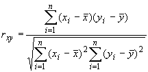,
Для этого:
-Заполните следующую таблицу:
| xi | yi | 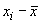 | 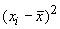 | 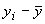 | 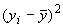 | 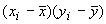 |
| x1 | y1 | |||||
| x2 | y2 | |||||
| . . . | . . . | |||||
xn |
yn |
|||||
| 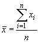 | 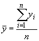 | 0 |
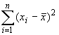 | 0 |
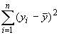 | 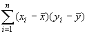 |
-Определите наличие связи между признаками (чем ближе |r| к 1, тем теснее связь; знак "+" у r означает прямую связь, а знак "-" - обратную)
Задание 2. Проверка гипотезы о значимости коэффициента корреляции
Проверьте гипотезу о значимости коэффициента корреляции, вычисленного в Задании 1. Для этого

=СТЬЮДРАСПОБР( ; n-2)
; n-2)
Задание 3. Перейдите на лист "Йод-заболеваемость". Определите коэффициент корреляции между среднесуточным содержанием йода в воде и пище жителей десяти районов страны и пораженностью населения заболеванием щитовидной железы. Определите его значимость на уровне 0,01 и 0,05. Результаты поместите на новый рабочий лист corr-2.
Задание 4. Корреляция альтернативных признаков
Измерить связь между прививками от гриппа и снижением заболеваемости по следующим данным:
| Заболели | Не заболели | |
| Привитые | 30 | 20 |
| Непривитые | 15 | 5 |
Что означает знак "минус" у вычисленного Вами коэффициента контингенции?